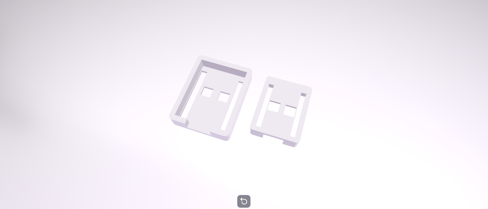

Improved Design of the ESP32 C3 Zero Case
Prototype 2 was created after testing the first design. The goal was to improve the size, strength, and usability of the case while keeping the ESP32 C3 Zero protected.
This version included a better fitting enclosure, improved openings for the USB port, and extra ventilation to allow better airflow. The overall shape was also made stronger and more compact.

Testing Prototype 2 showed that the changes made the design more practical and easier to use. The feedback from this version helped prepare the final design.